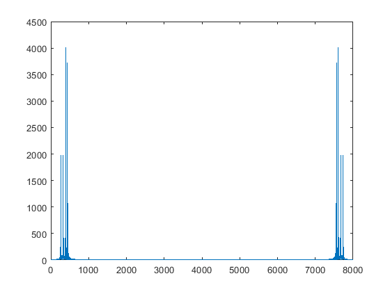
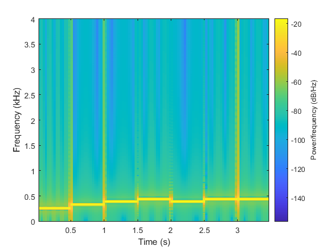
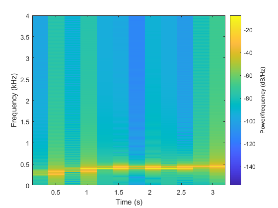
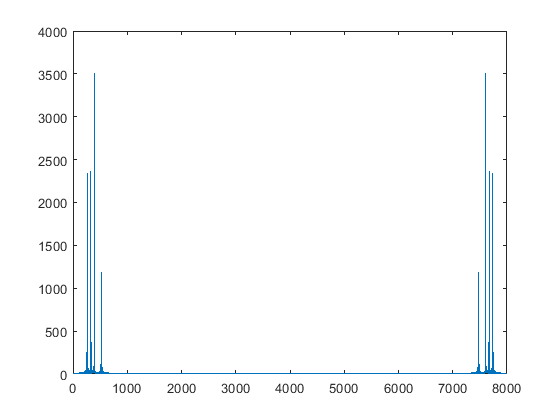
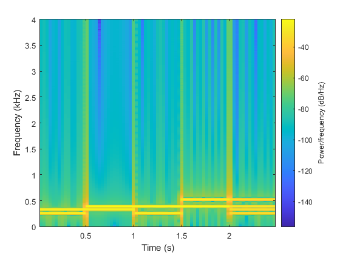

Contents
%Prelab 6 clc clear all close all
Step 2
afile = 'tones1.wav'; [y,fs]=audioread(afile) ; sound(y,fs); % The size of the y array is 28000 % The sampling frequency for this file is 8000Hz.
Step 3
Y = fft(y); figure() x = (0:((length(Y)-1)))*fs/length(Y); plot(x,abs(Y)) % The frequencies with the largest amplitude pltos are 392Hz and 7608Hz % This seems consistent with the sound we heard. % We can't determine the time order in which the tones occcured.
Step 4
sp_win = 512;
sp_ovr = 256;
sp_fftN = 512;
figure()
spectrogram(y, sp_win, sp_ovr, sp_fftN, fs, 'yaxis')
 Step 5
The frequency resolution of the DFTs using this window size is 8000/20000=.4. The time duration of the data for each DFT usign this window size is 30msish The apparent duration of each tone based on the spectrogramplot is 0.5sec The height in frequency of the bright red horizontal lines indidcating 5the largest magnitdues in the DFT for each segment is 0.45ish The width in time of segments that contain two frequencies at the transition time between tones is 63msish.
Step 6
sp_win = 4096; sp_ovr = 2048; sp_fftN = 4096; figure() spectrogram(y, sp_win, sp_ovr, sp_fftN, fs, 'yaxis') % The frequency resolution of the DFTs using this window size is 8000/20000=.4. % The time duration of the data for each DFT usign this window size is % 0.28ms % The apparent duration of each tone based ont he spectrogramplot is 30msish % The height in frequency of the bright red horizontal lines indidcating % 5the largest magnitdues in the DFT for each segment is 0.45ish % The width in time of segments that contain two frequencies at the transition time between tones is 0.5 secs.
Step 7
bfile = 'tones2a.wav'; [y,fs]=audioread(bfile) ; sound(y,fs); Y = fft(y); figure() x = (0:((length(Y)-1)))*fs/length(Y); plot(x,abs(Y)) sp_win = 512; sp_ovr = 256; sp_fftN = 512; figure() spectrogram(y, sp_win, sp_ovr, sp_fftN, fs, 'yaxis') % It is not stereo, therefore mono? 